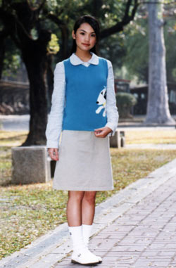

独一无二,袁成美
“其实，我和成美的生命早在那个烟花喷放的圣诞节就已经相关了，注定不管经历多少磨难，最终都还是要在一起。我等你，再久也无所谓。这么多年，我的心从来没有离开过你。八年了，我还是只想等你，你是独一无二的，4125袁成美。”
或许就像星华所说的：“勇敢表白，让对方明白你的心，起码，这是在按照自己的心意活着，你无怨无悔。
面对挂居与成美的爱情，我确实感觉到了自己的怯弱。
成美总是会在挂居的妥协与敏感中受伤，她却总是在坚强地微笑，勇敢地追求与等待；我想成美与挂居之所以会一起守望一段跨越八年的感情，可能正是因为他们有着一样的固执，虽然有时会失望于挂居的沉默、退避与迁就，但却为他每一次冲破自我的勇敢而感动。

（PS：这是很久前写的东西了）